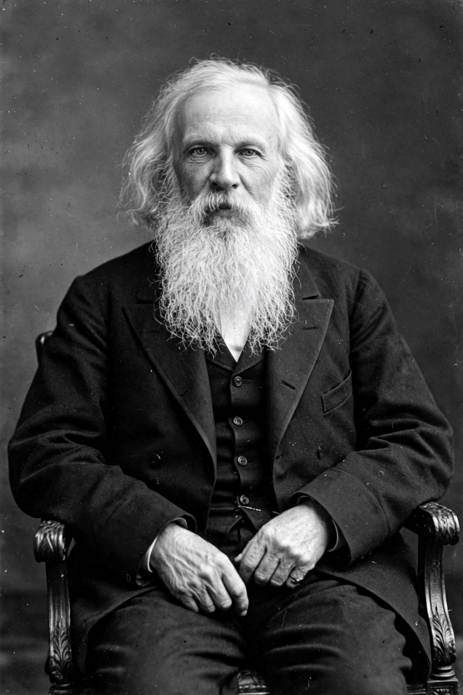

[Image placeholder: Dmitri Mendeleev in 1897]| Born | 8 February 1834, Tobolsk, Russian Empire |
|---|---|
| Died | 2 February 1907 (aged 72), Saint Petersburg, Russian Empire |
| Nationality | Russian |
| Alma mater | Main Pedagogical Institute, Saint Petersburg |
| Known for | Periodic table of the elements; periodic law |
| Fields | Chemistry |
| Institutions | Saint Petersburg State University |
**Dmitri Ivanovich Mendeleev** (8 February 1834 – 2 February 1907) was a Russian chemist and inventor. He is best remembered for formulating the periodic law and creating a version of the periodic table of elements. He used the periodic law not only to correct the then-accepted properties of some known elements, such as the valence and atomic weight of uranium, but also to predict the properties of three elements that were yet to be discovered (eka-aluminium, eka-silicon and eka-boron).
Mendeleev was born in Verkhnie Aremzyani, near Tobolsk in Siberia, into a family of a teacher and a mother who ran a glass factory. He studied in Saint Petersburg and worked in Heidelberg before becoming a professor at Saint Petersburg University. Element 101, Mendelevium, is named after him.
In 1869 Mendeleev published his periodic table in the first volume of his textbook Principles of Chemistry. He arranged the 63 then-known elements by atomic weight in rows and columns so that elements with similar chemical properties fell into the same groups, leaving gaps where he predicted undiscovered elements belonged. When gallium (1875), scandium (1879) and germanium (1886) were discovered and matched his predictions, the periodic law gained wide acceptance.
Mendeleev's table appeared in the same period as the independent work of the German chemist Lothar Meyer; priority is generally given to Mendeleev because his predictions were more detailed and more widely publicised.
Mendeleev worked on the theory and practice of Russian organic chemistry, on the thermal expansion of liquids, and on the nature of petroleum, arguing for its inorganic origin deep in the Earth. He helped found the Russian Chemical Society in 1869 and was involved in introducing the metric system and in setting standards for vodka production.
In 1906 the Nobel Prize committee's decision to award the chemistry prize elsewhere, despite Mendeleev's nomination, became a famous controversy; he died the following year in Saint Petersburg.
The crater Mendeleev on the far side of the Moon and element 101, mendelevium, are named in his honour. He is regarded as one of the founders of modern chemistry, and his periodic system underlies the modern periodic table, later reorganised by atomic number following the work of Henry Moseley.